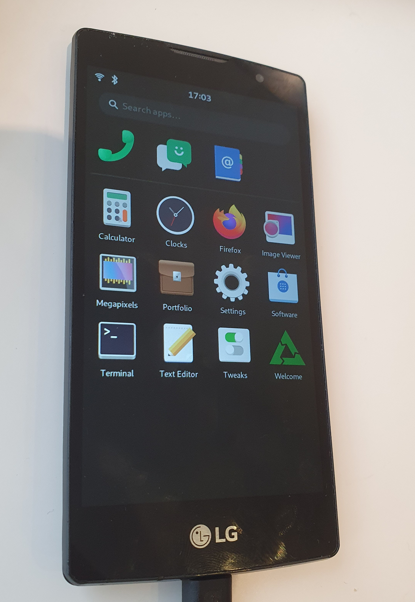

LG Spirit 4G LTE (lg-c70n)
|
 LG Spirit running Phosh | |
| Manufacturer | LG |
|---|---|
| Name | Spirit 4G LTE |
| Codename | lg-c70n |
| Released | 2015 |
| Category | testing |
| Original software | Android |
| Original version | 5.0.1 |
| Extended version | 6.0.1 |
| Hardware | |
| Chipset | Qualcomm Snapdragon 410 (MSM8916) |
| CPU | 4x 1.2 GHz Cortex-A53 |
| GPU | Adreno 306 |
| Display | 720x1280 IPS |
| Storage | 8 GB |
| Memory | 1GB |
| Architecture | aarch64 |
{kind=link}
This means that it cannot be selected in pmbootstrap.
| USB Networking |
Works
|
|---|---|
| Flashing |
Works
|
| Touchscreen |
Works
|
| Display |
Partial
|
| WiFi |
Works
|
| FDE | |
| Mainline |
Partial
|
| Battery |
Broken
|
| 3D Acceleration |
Works
|
| Audio |
Broken
|
| Bluetooth | |
| Camera |
Broken
|
| GPS |
Broken
|
| Mobile data | |
| SMS | |
| Calls | |
| USB OTG |
Broken
|
| NFC | |
| Accelerometer |
Broken
|
|---|---|
| Magnetometer | |
| Ambient Light | |
| Proximity | |
| Hall Effect | |
| Barometer | |
| Power Sensor | |
| Camera Flash | |
|---|---|
| Keyboard | |
| Touchpad | |
| USB-A | |
| HDMI/DP | |
| Ir TX | |
| Ir RX | |
| Stylus | |
| Haptics | |
| Ethernet | |
| FOSS bootloader | |
|
This device is based on the Snapdragon 410. See the SoC page for common tips, guides and troubleshooting steps |
Contents
Contributors
Maintainer(s)
Users owning this device
H440N, H445 vs H420
This page is for the Snapdragon 410 based models of the LG Spirit (H440N and H445), the H420 version is based on MediaTek MT6582 and will require a separate port.
How to unlock bootloader
Follow LG K10 instructions, but use aboot from here and twrp from here. NOTE: if you want to use TWRP, you must not boot into Android after flashing it to recovery! When you boot Android, twrp is replaced with the stock recovery.
How to enter flash mode
You should use fastboot from a correctly patched lk2nd, flash it same as you did with aboot and recovery. Note that LG seems to have their own built-in fastboot, but it uses some weird text mode for display, and no commands seem to work.
Installation
With the correct msm8916-mainline kernel patches and pmaports patches applied, you should be able to use https://wiki.postmarketos.org/wiki/Qualcomm_Snapdragon_410/412_(MSM8916)#Installation and https://wiki.postmarketos.org/wiki/Installation_guide, but you should build the patched kernel with envkernel.sh so it is used.